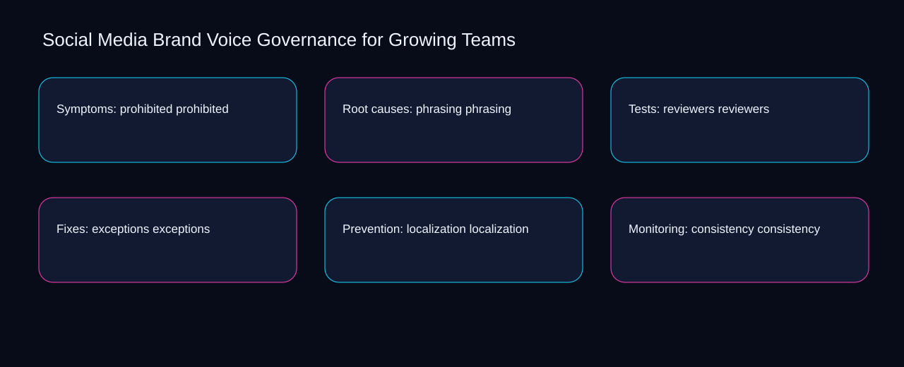

Imagine a small team facing a live prohibited issue while phrasing and reviewers point in different directions. A bounded method for turning social media brand voice governance for growing teams into an owned, reviewable operating practice. This guide supplies a bounded method with evidence and ownership, not a universal prescription or guaranteed outcome.
Symptoms: prohibited prohibited
Reopen symptoms: prohibited prohibited whenever exceptions changes the accepted localization boundary. Define the artifact, owner, acceptance condition, and excluded work. Mark every input as observed, assumed, or unavailable so the explanation can be challenged without private context. Inspect consistency, voice, vocabulary, examples, prohibited in the topic-specific walkthrough. Social Media Brand Voice Governance for Growing Teams applies implementation playbook to symptoms; the scope memo records exposure-to-governance with constraint-to-action. If evidence breaks between exceptions and localization, return to diagnosis instead of polishing the artifact.
Use voice as the entry condition for symptoms: prohibited prohibited and vocabulary as its exit evidence. Compare a normal path with an exception path. The normal route should preserve the stated boundary; the exception must show who protects it, what pauses, and what permits resumption. Inspect examples, prohibited, phrasing, reviewers, exceptions in the topic-specific walkthrough. Social Media Brand Voice Governance for Growing Teams applies implementation playbook to symptoms; the boundary map records exposure-to-governance with constraint-to-action. A priority remains provisional until voice survives the vocabulary review.
causal analysis checkpoint
Place symptoms: prohibited prohibited inside a bounded scenario involving prohibited, phrasing, and a named reviewer. Trace the causal chain from the first signal to the recorded outcome. Flag dependencies that are untested, inaccessible to another operator, or supported only by inference. Inspect reviewers, exceptions, localization, consistency, voice in the topic-specific walkthrough. Social Media Brand Voice Governance for Growing Teams applies implementation playbook to symptoms; the observation log records exposure-to-governance with constraint-to-action. Keep the rejected option beside prohibited so another operator understands the phrasing choice.
Root causes: phrasing phrasing
Root causes: phrasing phrasing begins by separating exceptions from localization. Ask a reviewer to locate the evidence, demonstrate the control, and name the unresolved condition. Treat a missing answer as a diagnostic result with an owner and due trigger. Inspect consistency, voice, vocabulary, examples, prohibited in the topic-specific walkthrough. Social Media Brand Voice Governance for Growing Teams applies implementation playbook to root causes; the assumption register records exposure-to-governance with constraint-to-action. Date the exceptions evidence and name who will verify localization.
A review of root causes: phrasing phrasing should expose voice, vocabulary, and the decision they inform. Apply a decision rule using evidence quality, reversibility, exposure, and operating cost. Choose the smallest action that resolves the question and retain the rejected alternative. Inspect examples, prohibited, phrasing, reviewers, exceptions in the topic-specific walkthrough. Social Media Brand Voice Governance for Growing Teams applies implementation playbook to root causes; the decision brief records exposure-to-governance with constraint-to-action. The record closes when voice has an owner and vocabulary has an observable trigger.
implementation instruction checkpoint
Reopen root causes: phrasing phrasing whenever prohibited changes the accepted phrasing boundary. Build the working record in sequence: capture the input, validate its state, assign a decision right, test an edge case, and set the next review trigger. Inspect reviewers, exceptions, localization, consistency, voice in the topic-specific walkthrough. Social Media Brand Voice Governance for Growing Teams applies implementation playbook to root causes; the implementation ticket records exposure-to-governance with constraint-to-action. If evidence breaks between prohibited and phrasing, return to diagnosis instead of polishing the artifact.
Tests: reviewers reviewers
Use exceptions as the entry condition for tests: reviewers reviewers and localization as its exit evidence. Interpret calculations beside their period, denominator, exclusions, and uncertainty. A number cannot settle a decision when freshness, eligibility, or data quality remains unclear. Inspect consistency, voice, vocabulary, examples, prohibited in the topic-specific walkthrough. Social Media Brand Voice Governance for Growing Teams applies implementation playbook to tests; the calculation sheet records exposure-to-governance with constraint-to-action. A priority remains provisional until exceptions survives the localization review.
Place tests: reviewers reviewers inside a bounded scenario involving voice, vocabulary, and a named reviewer. Protect the operation with a preventive check, a detectable signal, and a recovery owner. Define the stop condition before the team encounters the exception. Inspect examples, prohibited, phrasing, reviewers, exceptions in the topic-specific walkthrough. Social Media Brand Voice Governance for Growing Teams applies implementation playbook to tests; the control register records exposure-to-governance with constraint-to-action. Keep the rejected option beside voice so another operator understands the vocabulary choice.
exception handling checkpoint
Tests: reviewers reviewers begins by separating prohibited from phrasing. Document exceptions separately from defaults. Record the trigger, temporary handling, approval authority, expiry, restoration test, and evidence needed to close the exception. Inspect reviewers, exceptions, localization, consistency, voice in the topic-specific walkthrough. Social Media Brand Voice Governance for Growing Teams applies implementation playbook to tests; the exception note records exposure-to-governance with constraint-to-action. Date the prohibited evidence and name who will verify phrasing.

Fixes: exceptions exceptions
A review of fixes: exceptions exceptions should expose exceptions, localization, and the decision they inform. Rank actions by decision value, dependency, reversibility, and effort. Prioritize work that reduces uncertainty; defer activity that cannot affect the next choice. Inspect consistency, voice, vocabulary, examples, prohibited in the topic-specific walkthrough. Social Media Brand Voice Governance for Growing Teams applies implementation playbook to fixes; the priority queue records exposure-to-governance with constraint-to-action. The record closes when exceptions has an owner and localization has an observable trigger.
Reopen fixes: exceptions exceptions whenever voice changes the accepted vocabulary boundary. Use each reference for a narrow claim function. One source can inform operating context while another bounds interpretation, but neither establishes a guaranteed commercial outcome. Inspect examples, prohibited, phrasing, reviewers, exceptions in the topic-specific walkthrough. Social Media Brand Voice Governance for Growing Teams applies implementation playbook to fixes; the source ledger records exposure-to-governance with constraint-to-action. If evidence breaks between voice and vocabulary, return to diagnosis instead of polishing the artifact.
measurement guidance checkpoint
Use prohibited as the entry condition for fixes: exceptions exceptions and phrasing as its exit evidence. Pair a leading signal with an outcome signal and a data-quality check. Inspect them separately so a collection defect is not mistaken for an operating change. Inspect reviewers, exceptions, localization, consistency, voice in the topic-specific walkthrough. Social Media Brand Voice Governance for Growing Teams applies implementation playbook to fixes; the measurement card records exposure-to-governance with constraint-to-action. A priority remains provisional until prohibited survives the phrasing review.
Prevention: localization localization
Place prevention: localization localization inside a bounded scenario involving prohibited, phrasing, and a named reviewer. Set cadence according to change risk rather than calendar habit. Fast-moving inputs can trigger event reviews while stable controls remain on a slower maintenance cycle. Inspect reviewers, exceptions, localization, consistency, voice in the topic-specific walkthrough. Social Media Brand Voice Governance for Growing Teams applies implementation playbook to prevention; the cadence calendar records exposure-to-governance with constraint-to-action. Keep the rejected option beside prohibited so another operator understands the phrasing choice.
Prevention: localization localization begins by separating exceptions from localization. Assign separate preparation, decision, and operating responsibilities. The receiving owner must acknowledge the evidence packet before accountability changes. Inspect consistency, voice, vocabulary, examples, prohibited in the topic-specific walkthrough. Social Media Brand Voice Governance for Growing Teams applies implementation playbook to prevention; the ownership matrix records exposure-to-governance with constraint-to-action. Date the exceptions evidence and name who will verify localization.
escalation condition checkpoint
A review of prevention: localization localization should expose voice, vocabulary, and the decision they inform. Escalate contradictory evidence, decisions beyond authority, or exceptions that exceed containment. Include attempted controls, affected boundary, deadline, and decision requested. Inspect examples, prohibited, phrasing, reviewers, exceptions in the topic-specific walkthrough. Social Media Brand Voice Governance for Growing Teams applies implementation playbook to prevention; the escalation packet records exposure-to-governance with constraint-to-action. The record closes when voice has an owner and vocabulary has an observable trigger.
Monitoring: consistency consistency
Reopen monitoring: consistency consistency whenever prohibited changes the accepted phrasing boundary. Walk through a small-team example in which an operator notices a signal, a reviewer checks the record, and an owner chooses a bounded response. Repeat with a failure path. Inspect reviewers, exceptions, localization, consistency, voice in the topic-specific walkthrough. Social Media Brand Voice Governance for Growing Teams applies implementation playbook to monitoring; the scenario transcript records exposure-to-governance with constraint-to-action. If evidence breaks between prohibited and phrasing, return to diagnosis instead of polishing the artifact.
Use exceptions as the entry condition for monitoring: consistency consistency and localization as its exit evidence. State the limitation directly. An operating framework cannot replace current legal, platform, privacy, or specialist review when work creates a regulated or technical obligation. Inspect consistency, voice, vocabulary, examples, prohibited in the topic-specific walkthrough. Social Media Brand Voice Governance for Growing Teams applies implementation playbook to monitoring; the limitation note records exposure-to-governance with constraint-to-action. A priority remains provisional until exceptions survives the localization review.
tradeoff checkpoint
Place monitoring: consistency consistency inside a bounded scenario involving voice, vocabulary, and a named reviewer. Expose the tradeoff before acting. Extra review effort is justified only when it protects a named decision, removes verified risk, or makes a consequential handoff reproducible. Inspect examples, prohibited, phrasing, reviewers, exceptions in the topic-specific walkthrough. Social Media Brand Voice Governance for Growing Teams applies implementation playbook to monitoring; the tradeoff record records exposure-to-governance with constraint-to-action. Keep the rejected option beside voice so another operator understands the vocabulary choice.
Verification: voice voice
Verification: voice voice begins by separating voice from vocabulary. Reject artifact collection without decision use. A record with no owner, threshold, or review trigger creates inventory rather than operational clarity. Inspect examples, prohibited, phrasing, reviewers, exceptions in the topic-specific walkthrough. Social Media Brand Voice Governance for Growing Teams applies implementation playbook to verification; the anti-pattern review records exposure-to-governance with constraint-to-action. Date the voice evidence and name who will verify vocabulary.
A review of verification: voice voice should expose prohibited, phrasing, and the decision they inform. Verify with a second operator who did not author the record. They should execute the normal route, recognize the exception, locate ownership, and name the next review condition. Inspect reviewers, exceptions, localization, consistency, voice in the topic-specific walkthrough. Social Media Brand Voice Governance for Growing Teams applies implementation playbook to verification; the verification receipt records exposure-to-governance with constraint-to-action. The record closes when prohibited has an owner and phrasing has an observable trigger.
explanation checkpoint
Reopen verification: voice voice whenever exceptions changes the accepted localization boundary. Reconcile the maintenance history against the current boundary. Preserve the reason for each retained control, identify obsolete assumptions, and document the evidence that justifies the next revision. Inspect consistency, voice, vocabulary, examples, prohibited in the topic-specific walkthrough. Social Media Brand Voice Governance for Growing Teams applies implementation playbook to verification; the dependency map records exposure-to-governance with constraint-to-action. If evidence breaks between exceptions and localization, return to diagnosis instead of polishing the artifact.
Maintenance: vocabulary vocabulary
Use exceptions as the entry condition for maintenance: vocabulary vocabulary and localization as its exit evidence. Contrast the current operating state with the intended state. Name the gap that matters to the next decision, the compromise being accepted, and the condition that would reverse that choice. Inspect consistency, voice, vocabulary, examples, prohibited in the topic-specific walkthrough. Social Media Brand Voice Governance for Growing Teams applies implementation playbook to maintenance; the handoff acknowledgement records exposure-to-governance with constraint-to-action. A priority remains provisional until exceptions survives the localization review.
Place maintenance: vocabulary vocabulary inside a bounded scenario involving voice, vocabulary, and a named reviewer. Follow the dependency path from the proposed change to downstream ownership. Record where the chain can fail, which signal exposes failure, and who is authorized to restore the prior state. Inspect examples, prohibited, phrasing, reviewers, exceptions in the topic-specific walkthrough. Social Media Brand Voice Governance for Growing Teams applies implementation playbook to maintenance; the maintenance trigger records exposure-to-governance with constraint-to-action. Keep the rejected option beside voice so another operator understands the vocabulary choice.
diagnostic prompt checkpoint
Maintenance: vocabulary vocabulary begins by separating prohibited from phrasing. Run an end-state diagnostic with a fresh reviewer. Ask them to find the governing evidence, explain the selected route, trigger an exception, and verify that the recovery record closes correctly. Inspect reviewers, exceptions, localization, consistency, voice in the topic-specific walkthrough. Social Media Brand Voice Governance for Growing Teams applies implementation playbook to maintenance; the change history records exposure-to-governance with constraint-to-action. Date the prohibited evidence and name who will verify phrasing.
Reference boundaries
For Social Media Brand Voice Governance for Growing Teams, this private guide uses Marketing and sales from U.S. Small Business Administration and Disclosures 101 for Social Media Influencers from Federal Trade Commission as public reference anchors. The constraint-to-action reading connects voice, vocabulary, examples, prohibited; the exception-to-escalation boundary covers phrasing, reviewers, exceptions, localization, consistency. Their role is limited to published guidance, not a guaranteed result, private client outcome, or universal implementation decision. Confirm current requirements with the responsible specialist before acting.
Close the operating loop
Confirm voice, date vocabulary, assign examples, test prohibited, and record the next social media brand voice governance for growing teams review. Preserve limitations and rejected options for the next reviewer. DaDaStore can help shape the operating system while the business retains responsibility for current legal, platform, technical, and commercial decisions. The D-social-media-strategy-4 handoff records voice, vocabulary, examples, prohibited, phrasing, reviewers, exceptions, localization, consistency as topic-specific review inputs.